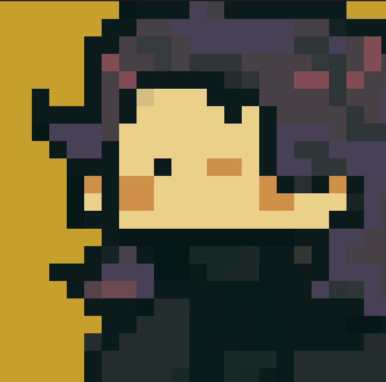

Digital Art
By Raven

Digital Art
Digital art and concept design stand at the forefront of contemporary art and creativity, commanding a pivotal role with their unique blend of innovation and technological allure. Digital art, as an art form created through computer technology and digital media, transcends the boundaries of traditional artistic expression, providing artists with limitless creative possibilities. From digital painting and sculpture to virtual reality and augmented reality, digital art pushes the boundaries of artistic creation, delivering awe-inspiring visual experiences to audiences. Concept design, an integral subset of digital art, emphasizes creative ideation and visual representation. In concept design, artists transform abstract concepts into visual elements through profound thinking and imaginative conception. This may involve designing captivating scenes, characters, and objects for films, games, or other media projects. Leveraging digital tools, concept designers materialize their imaginative visions, injecting fresh vitality into the entire creative industry. The rise of digital art and concept design underscores the synergy between technology and art. Together, they create an entirely new realm of artistic expression, offering artists unprecedented avenues for showcasing their creativity and propelling the evolution of visual arts. In this digital age, digital art and concept design not only serve as tools for creative expression but also challenge traditional notions and guide the future direction of artistic development.
